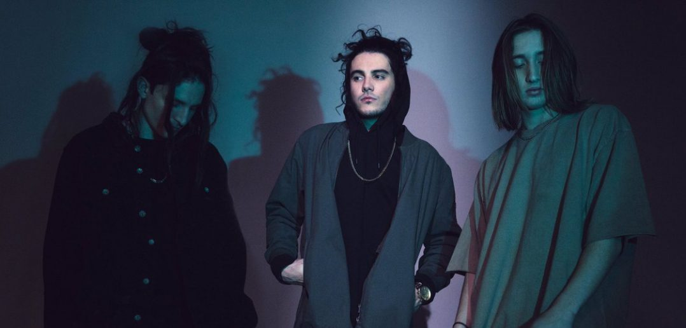
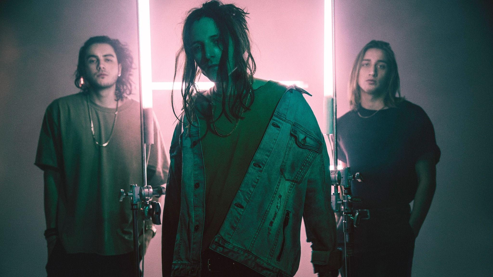
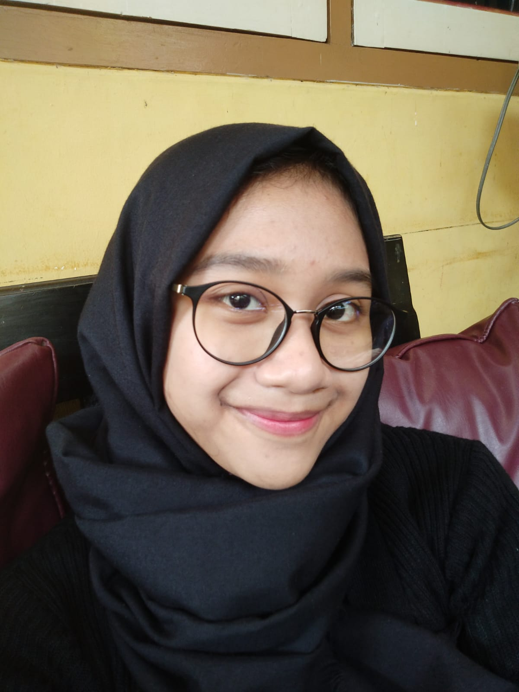

GRUP R&B CHASE ATLANTIC
TENTANG CHASE ATLANTIC
Grup asal Australia yang terdiri trio ini memiliki vokalis utama, Mitchel Cave, gitaris ritme dan vokalis, Christian Anthony, gitaris utama dan pemain saksofon juga vokalis latar, Clinton Cave. Berkat produksi luar bisa juga didukung dengan vocal mereka yang unik, lirik yang indah membuat grup ini telah mengumpulkan hampir satu miliar streaming di seluruh dunia. Pada awalnya, suara Chase Atlantic diklasifikasikan sebagai pop rock dan punk rock. Namun, selama bertahun-tahun, mereka secara bertahap memodifikasi suaranya menjadi sesuatu yang unik. Dalam kata-kata mereka, itu adalah " memunculkan pop alternatif gelap yang diselingi oleh rock dan RnB "Dari semua lagu yang ada di album mereka Beauty n Death , “OHMAMI” mungkin adalah contoh terbaik dari kegembiraan dan kebebasan yang mereka rasakan setelah pembatasan COVID-19 dicabut dan mereka akhirnya dapat memulai kembali gaya hidup serba cepat yang dulu mereka miliki.
TERBENTUKNYA CHASE ATLANTIC
Seorang filsuf besar dari Australia pernah berkata: “Kami bukan sebuah band.” Namun demi kelancaran kisah Chase Atlantic ini — kita harus merujuknya seperti itu. Chase Atlantic adalah trio yang dibentuk oleh dua bersaudara, Mitchel Cave dan Clinton Cave, dan seorang teman lama, Christian Anthony, yang memproduseri, menampilkan, dan dengan penuh semangat menciptakan pop alternatif gelap yang diselingi oleh rock dan R&B. Grup asal Australia ini mengaburkan batasan antara estetika nokturnal dan kebahagiaan primal pada debut self-titled mereka di tahun 2017 untuk Warner Bros. Records. Belakangan tahun itu, mereka merilis album studio pertama mereka dan melakukan tur AS dengan enam belas pertunjukan di sebelas negara bagian. Namun, pada musim panas 2018, Chase Atlantic menjadi mandiri . Mereka telah merilis dua album studio lagi dan terus berupaya merilis musik baru.
Lagu Chase Atlantic Yang Paling Sering Diputar
- Swim
- Into It
- Friends
- Slow Down
- Numb to the Feeling
Rank Lagu Chase Atlantic di Spotify
| No |
Judul Lagu |
Tahun Rilis |
| 1. |
Swim |
2017 |
| 2. |
Friends |
2015 |
| 3. |
Consume ft. Goon Des Garcons |
2017 |
| 4. |
Into It |
2017 |
| 5. |
HEAVEN AND BACK |
2019 |
Sumber : Klik
Disini
Yang mengerjakan tugas ini :
Nama : Melani Putri Devita Sari
NIM : 11210251000110
